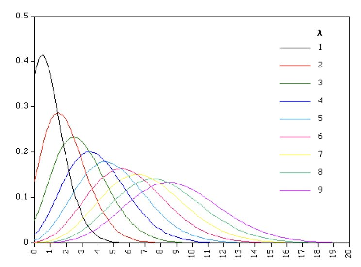

Statistics for Bioengineering - Week 2
Tidyverse Family of Packages

Figure 1: Tidyverse packages overview
A tibble - a tidyverse dataframe

A tibble - a tidyverse dataframe

Types of variables in a tibble

Figure 2: dplyr functions
Filter, Arrange, and Select

Grammar of Graphics

Scatterplots

Boxplots

Boxplots

Combining Geoms

Faceting

Three-Dimensional Data

Good, Bad, and Ugly

A ticker tape parade of confusion
A line to no understanding

Wack a mole

Disk of disinformation

Steaming pie chart mess

A bake sale of pie charts


Minard’s map of Napoleon’s Russian campaign - Edward Tufte
“Above All Else Show the Data”
 {#fig-align=“center” width=“80%”}
{#fig-align=“center” width=“80%”}
Represent Magnitudes Honestly

Rattenborg et al. 1999 Nature
How NOT to Make a Figure


“Graphical excellence begins with telling the truth about the data” – Tufte 1983
Accuracy vs. Precision

- Accuracy: closeness to true value
- Precision: closeness of repeated estimates to each other
- Replication quantifies variation
- Randomization avoids bias
PMF, PDF, and CDF in R

Figure 3: Comparing discrete (Poisson) and continuous (Normal) distributions (probability mass function, probability density function, and cumulative density function)
Common moments of distributions

A Bernouli Trial

Probability of Independent Events

Let’s Simulate Coin Flips

In-Class Demo: Law of Large Numbers with Coin Flips
Watch how the proportion of heads converges to 0.5 as we flip more coins:

Law of Large Numbers in R
# Simulate cumulative means from a Normal(10, 2) population
set.seed(123)
n <- 1000
samples <- rnorm(n, mean = 10, sd = 2)
cumulative_means <- cumsum(samples) / 1:n
plot(1:n, cumulative_means, type = "l", col = "steelblue", lwd = 2,
xlab = "Sample Size (n)", ylab = "Cumulative Mean",
main = "Law of Large Numbers: Mean Converges to μ = 10")
abline(h = 10, col = "red", lwd = 2, lty = 2)
legend("topright", c("Cumulative Mean", "True Mean (μ = 10)"),
col = c("steelblue", "red"), lwd = 2, lty = c(1, 2))
Figure 4: Sample means converge to population mean as sample size increases
Binomial Distribution

Creating a Binomial Distributions

Poisson Distribution Examples


Creating Poisson Distributions

Uniform Distribution
All outcomes equally probable.
\[E[X] = \frac{(a+b)}{2}\]

Exponential Distribution

Normal Distribution

Normal Distribution

Why is the Normal Distribution Special?

Why Normal is Special in Biology

Why Normal is Special in Biology

Visualizing the Central Limit Theorem

Figure 5: CLT: Sample means become normal even from non-normal populations
CLT in Quantitative Genetics
Why are complex traits normally distributed?
Simulate a trait controlled by 5 genes, each with additive effects:

Sampling Variation of a Parameter


Estimation and Confidence Intervals


Visualizing What “95% Confidence” Means

Figure 6: 95% of CIs from repeated sampling contain the true mean (μ = 10)